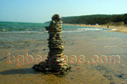
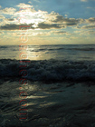
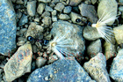
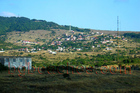
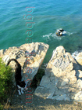
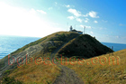
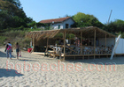
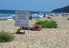
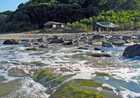

Irakli and Emona Beach Guide
About Irakli and Emona
Irakli and Emona is a destination along Bulgaria's beautiful Black Sea coast. This destination features Sandy beach, Bulgarian coastal atmosphere, summer facilities, making it ideal for beach lovers, families, travelers seeking authentic Bulgarian coast. The Bulgarian Black Sea coast offers 378 kilometers of diverse beaches, and Irakli and Emona provides its own unique character and attractions.
What to Expect
The beach area at Irakli and Emona features fine to medium sand typical of Black Sea beaches. During summer months (June-September), water temperatures range from 22-25°C (72-77°F), perfect for swimming. The area offers standard beach amenities including umbrella and sunbed rentals (typically 10-20 BGN per day), changing facilities, and food services. Peak season runs from mid-July through mid-August, when the beaches are busiest and prices highest.
Getting There & Practical Information
The nearest airports are Burgas (BOJ) and Varna (VAR), both serving international and domestic flights. Bus services connect major coastal towns during summer. Accommodation ranges from budget guesthouses (40-60 BGN/night) to mid-range hotels (80-150 BGN/night). Bulgaria uses the Bulgarian Lev (BGN), approximately 2 BGN = 1 EUR. English is commonly spoken in tourist areas.
Nearby Attractions
Beyond the beach, visitors can explore other Black Sea destinations, local attractions. The Bulgarian coast combines natural beauty with historical sites, traditional villages, and opportunities for hiking, water sports, and cultural experiences. Each location offers something unique while maintaining authentic Bulgarian coastal character.
Best Time to Visit
June and September offer excellent weather with fewer crowds and better prices compared to peak July-August. Water is warm enough for comfortable swimming from mid-June through mid-September. For the quietest experience and best value, consider late May or early October, though some facilities may have reduced hours.
Tips for Visitors
Bring high SPF sunscreen (30+) as the sun is strong. Many beach vendors prefer cash. Learning a few Bulgarian phrases is appreciated. Book accommodations in advance for July-August. Consider renting a car to explore multiple beaches. Try local restaurants for authentic Bulgarian cuisine and fresh Black Sea fish. Beach umbrellas and sunbeds are available but bringing your own gear saves money.
Photo Gallery
Browse our collection of photos from Irakli and Emona showing the beach, facilities, and atmosphere. These authentic images help you understand what to expect and plan your visit effectively.
Art
heart
wave
view
dawn
Fun
Invention
Yacht- 
sculpture
sparrows
beach2
Heaven
Birds
birds2
footmark
electricity
Sunrise
rocky2
rocky
sunrise2- 
sunrise1
stone- 
Ants - 
Emona
Kom - Emine- 
cape_Emine
border2
Contrast- 
lighthouse
forbid
Emona
Charm Street
uppermost
panorama
A view from above
beach6
zone
sunshade
Irakli's bar
beach4
beach- 
Bar on the beach
party_people
bar2- 
finish
river_Vaia
beach3
Cafe del mar
sea_shore
coast- 
Border
Sand
Nude
Scandalous plan